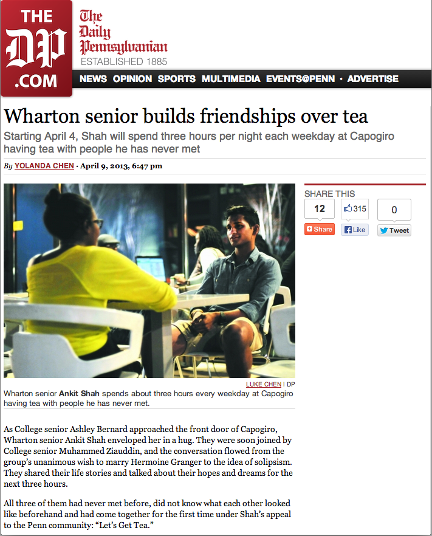

My name is Ankit Shah, and I started hosting groups of strangers to sit for fantastic conversations some time back. Not only did a lot of people take interest, but people started coming back for seconds, thirds, fourths. Some people even wanted to bring it to other parts of the world! So now that's happening. That's why I built Tea With Strangers.
If you want to learn more about the story, you should browse the website and our Facebook page. If you're curious for more, feel free to email me.
If you're just here to see the first version of the site, keep scrolling.
All love, Ankit
NOTE: Any signups on this site don't actually go anywhere. That means that if you'd like to join for tea time, go to Tea With Strangers.
Hey SF / Bay Area! Let's get tea.
My name is Ankit. I recently graduated from UPenn and moved to Menlo Park from New York.
People say the Bay has great people, and I've met like 10 so far. There's like 8 million more. If you're one of them, and you enjoy a good conversation, let's sit over tea and share some stories.
“Cool, I’m in.”
This is me. I'm really friendly.
I did this a few months ago before graduating from Penn on a whim, and 200+ people signed up to share stories. Amazing people who may have never crossed paths otherwise met, and it really opened my eyes to the people that were around me every single day for four years. Meeting strangers is a lovely reminder of the humanity that surrounds us (cheesy, but true).
200 people did this last time
and why you should join them

The school paper wrote about me! Mom was proud.
Six random strangers met every night for six weeks. Friends were made. Honest stories were shared.
Weird stuff like this attracts interesting people. Pretty much anyone that signs up is reasonably open minded and believes in strangers (or is stepping way out of their comfort zone). Entering an interaction like that is bound to produce some smiles.
You’ll step out of your comfort zone. This is as weird for me as it is for you. But it’ll be interesting. I’ll ask you weird questions.
We’ll probably never meet otherwise. There’s something cool about creating paths that intersect with someone else’s instead of waiting to cross paths with them. We’re creating serendipity out of nothing.
The time you’ll spend getting tea with me would otherwise be spent checking facebook or twitter, probably, feigning some sense of real human connection or whatever. Real humans are cooler than tweets. Real humans can hug. And I’m a damn good hugger.